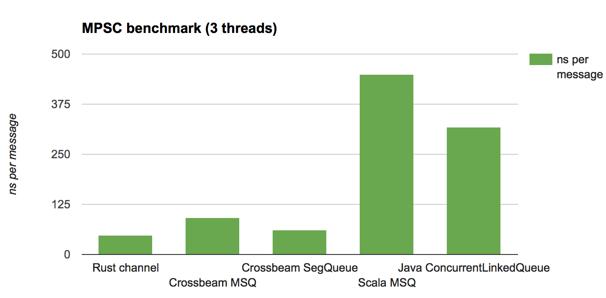
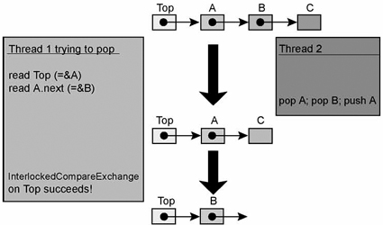

本文内容译自Lock-freedom without garbage collection,中间有少量自己的修改.
人们普遍认为，垃圾收集的一个优点是易于构建高性能的无锁数据结构。 对这些数据结构进行手动内存管理并不容易，而 GC 使其变得非常简单。 这篇文章表明，使用 Rust，可以为并发数据结构构建一个内存管理 API:
- 使得实现无锁数据结构和 有GC的语言(如Java) 一样容易;
- 静态保护以防止内存管理方案的滥用;
- 具有与 GC 竞争的开销(并且比 GC 更可预测) 在下面展示的基准测试中，Rust 能够轻松地击败 Java 无锁队列实现，并且具有易于编写的实现。
我已经在Crossbeam 这个crate中实现了“基于epoch的内存回收” ，这个crate现在就可以用于您自己的数据结构。 本文介绍了一些关于无锁数据结构的背景知识、 epoch 算法以及完整的Rust API。
Benchmarks
在深入研究基于epoch的内存回收的API设计和使用之前，让我们直奔主题: 性能。
为了测试 Crossbeam 实现相对于完整 GC(有完整GC的语言,比如java) 的开销，我在它上面实现了一个基本的无锁队列(Michael Scott queue) ，并在 Scala 中构建了相同的队列。 一般来说，基于 jvm 的语言是通向无锁数据结构的“良好 GC”路径的一个很好的测试用例。
除了上述实现,我还比较了:
- 基于crossbeam实现的更高效的分段队列(segmented queue),它分配具有多个slot的节点
- 使用锁保护的单线程队列
- 使用java.util.concurrent实现的ConcurrentLinkedQueue,他是Michael Scott queue一个优化版本.
我使用了两种方式来测试这些队列:
- MPSC 一个多生产者、单消费者(MPSC)场景，其中两个线程重复发送消息，一个线程接收消息，两者都在一个循环中。
- MPMC 多生产者、多消费者(multi-producer，multi-consumer，MPMC)场景，其中两个线程发送和两个线程接收在一个循环中。
这样的基准测试对于测量“竞争”(多线程竞争同时进行并发更新)下无锁数据结构的可伸缩性相当典型。 在构建生产队列实现时，应该对许多变体进行基准测试; 这里的目标仅仅是评估内存管理方案的大致开销。
对于 MPSC 测试，我还将其与 Rust 内置channel中使用的算法进行了比较，该算法针对此场景进行了优化(因此不支持 MPMC)。
测试的机器是4 Core 2.6 Ghz Intel Core i 7,16gb 内存。 以下是以纳秒为单位给出的结果(越低越好)

分析
主要的收获是，Crossbeam 的实现方式(尚未调整)在所有情况下都具有竞争力。 通过使用更聪明或更专业的队列，可以在 Rust 和 JVM 两方面都做得更好，但这些结果至少表明 epoch 的开销是合理的。
注意，java / scala 版本在 MPMC 测试中的表现要比在 MPSC 测试中好得多。 为什么？ 答案很简单: 垃圾收集。 在 MPSC 测试中，随着时间的推移，生产者往往会超过消费者，这意味着队列中的数据量会缓慢增长。 这反过来又增加了每次垃圾收集的成本，这涉及到遍历实时数据集。
相比之下，在 epoch 方案中，管理垃圾的成本是相对固定的: 它与线程的数量成正比，而不是与活动数据的数量成正比。 事实证明，这会带来更好、更一致 / 更可预测的性能。
最后，我没有在图表中包括的一个比较(因为它会使其他比较相形见绌)是在 Rust 中围绕 deque 使用 Mutex。 对于 MPMC 测试，性能约为3040ns/op，比 Crossbeam 实现慢20倍以上。 这生动地说明了为什么无锁数据结构非常重要——那么让我们开始深入了解它们是什么。
无锁数据结构
当您希望使用(和变更)来自许多并发线程的数据结构时，需要进行同步。 最简单的解决方案是全局锁定 Rust，将整个数据结构包装在一个 Mutex 中。
问题是，这种“粗粒度”同步意味着在访问数据结构时，多个线程总是需要协调，即使它们访问的是不相交的数据结构部分。 这还意味着，即使一个线程只是尝试读取，它也必须通过更新锁状态进行写操作——由于锁是一个全局通信点，这些写操作将导致大量缓存失效通信。 即使对于更精细的内容使用了大量的锁，仍然存在其他危险，如死锁和优先转置，并且通常仍然将性能提升有限(you often still leave performance on the table.)
一个更加激进的替代方案是无锁数据结构，它使用原子操作直接更改数据结构，而不需要进一步同步。 它们通常比基于锁的设计更快、更可伸缩、更健壮。
在这篇文章中，我不打算给出一个完整的无锁编程教程，但是关键的一点是，如果你没有全局同步，那么很难说你什么时候可以释放内存。 许多已发布的算法基本上假定是垃圾回收器或其他回收内存的方法。 因此，在Rust中实现无锁并发之前，我们需要一个关于内存回收的工具——这就是这篇博客文章的目的所在。
特雷伯栈
为了让事情更具体，让我们看看无锁数据结构的“ Hello world” : 特雷伯栈(Treiber’s stack)。 栈表示为单链表，所有修改都发生在head这个指针上:
#![feature(box_raw)]
use std::ptr::{self, null_mut};
use std::sync::atomic::AtomicPtr;
use std::sync::atomic::Ordering::{Relaxed, Release, Acquire};
pub struct Stack<T> {
head: AtomicPtr<Node<T>>,
}
struct Node<T> {
data: T,
next: *mut Node<T>,
}
impl<T> Stack<T> {
pub fn new() -> Stack<T> {
Stack {
head: AtomicPtr::new(null_mut()),
}
}
}
2
3
4
5
6
7
8
9
10
11
12
13
14
15
16
17
18
19
20
21
22
最简单的方法就是从pop开始。 要pop，你只需要循环保存栈顶指针head，然后做一个CAS，用next指针替换当前head:
请注意，如果旧值匹配，则 compare_and_swap 原子性地将AtomicPtr的值从旧值更改为新值。 同时，如果你不熟悉Acquire, Release和Relaxed 这些标签的含义，你可以放心地忽略它们。
impl<T> Stack<T> {
pub fn pop(&self) -> Option<T> {
loop {
// take a snapshot
let head = self.head.load(Acquire);
// we observed the stack empty
if head == null_mut() {
return None
} else {
let next = unsafe { (*head).next };
// if snapshot is still good, update from `head` to `next`
if self.head.compare_and_swap(head, next, Release) == head {
// extract out the data from the now-unlinked node
// **NOTE**: leaks the node!
return Some(unsafe { ptr::read(&(*head).data) })
}
}
}
}
}
2
3
4
5
6
7
8
9
10
11
12
13
14
15
16
17
18
19
20
21
22
23
ptr::read 函数是 Rust 在没有静态或动态跟踪的情况下提取数据所有权的方法。 在这里，我们使用 compare_and_swap 的原子性来保证只有一个线程会调用 ptr::read-正如我们将看到的，这个实现永远不会释放 Nodes，因此数据上的析构函数永远不会被调用。 这两个事实一起使我们使用ptr::read是安全的。
push 和pop差不多:
impl<T> Stack<T> {
pub fn push(&self, t: T) {
// allocate the node, and immediately turn it into a *mut pointer
let n = Box::into_raw(Box::new(Node {
data: t,
next: null_mut(),
}));
loop {
// snapshot current head
let head = self.head.load(Relaxed);
// update `next` pointer with snapshot
unsafe { (*n).next = head; }
// if snapshot is still good, link in new node
if self.head.compare_and_swap(head, n, Release) == head {
break
}
}
}
}
2
3
4
5
6
7
8
9
10
11
12
13
14
15
16
17
18
19
20
21
The problem
如果是支持GC的语言编写了上面的代码,那么我们已经实现了一个lock-free stack,但是在rust中不行,因为它发生了内存泄漏.特别是，当Node指针从堆栈中移除后，pop实现不会尝试释放它。
如果我们加上内存释放会有什么问题呢:
// extract out the data from the now-unlinked node
let ret = Some(unsafe { ptr::read(&(*head).data) });
// free the node
mem::drop(Box::from_raw(head));
return ret
2
3
4
5
6
7
问题是其他线程也可能同时运行 pop。 这些线程可以获得当前head的快照; 没有什么可以阻止它们读取(*head).next。 就在我们释放他们指向的节点之后，快照上的下一个——一个正在形成的user-after-freebug！ 这就是症结所在。 我们希望使用无锁算法，但是许多算法遵循与上面的栈类似的模式，这使得我们没有明确的点可以安全地释放一个节点。 现在怎么办？
感觉这里描述的问题并不是很清楚,我加上一个ABA问题
所有没有gc的系统在lock-free编程的是一定要考虑这个问题,具体来说就是假设T1,T2两个线程, 初始stack是a->b->c. 这是T1要pop,那么得到a,这时候a.next=b,此时发生了线程调度.然后切换到T2,T2 pop a, pop b,push a 所以stack里面是a->c. 然后切换到T1,这时候T1看到栈顶地址和自己取到的是一样的(a的地址),然后就把栈顶设置为a.next,也就是b,但是这时候b已经被释放了.
这是典型的ABAA问题: 
基于epoch的内存回收
对于无锁代码，有几种不是基于 gc 的内存管理方法，但它们都归结为相同的核心特点:
- 可达性有两个来源——数据结构和访问它的线程中的快照(引用)。 在删除一个节点之前，我们需要知道它不能以这两种方式中的任何一种方式到达。
- 一旦一个节点从数据结构中解除链接，就不会创建到达该节点的新快照(引用)。
其中一个最优雅和有希望的回收方案是Keir Fraser’s epoch-based reclamation，这来自于他的博士论文。
其基本思想是将未与数据结构链接的节点(可达性的第一个来源)隐藏起来，直到可以安全地删除它们。 在删除隐藏的节点之前，我们需要知道当时访问数据结构的所有线程都已经完成了它们正在执行的操作。 通过上面的特点2，这将意味着不再有任何引用留下(因为在此期间不可能创建新的引用)。 最困难的部分是在不同步的情况下完成所有这些工作。 否则，我们就失去了lock-free应该带来的好处！
epoch的工作原理是:
- A 全局epoch计数器(取值0、1和2) ;
- A global list of garbage for each epoch;每个opoch都有一个全局垃圾列表;
- 每个线程的“活动”标志;
- 每个线程的epoch计数器
epoch用于发现何时垃圾可以安全地释放，因为没有线程可以到达它。 与传统的 GC 不同，这不需要遍历实时数据; 这只是检查opoch计数器。
当一个线程想要对数据结构执行一个操作时，它首先设置它的active标志，然后更新它的本地epoch以匹配全局epoch。 如果线程从数据结构中删除一个节点，则将该节点添加到当前全局epoch的垃圾列表中。 (注意: 垃圾进入当前的全局epoch，而不是以前的本地快照，这一点非常重要。) 当它完成操作时，它清除active标志。
为了尝试收集垃圾(可以在任何时候执行) ，线程遍历所有参与线程的标志，并检查所有活动线程是否都在当前epoch中。 如果是这样，它可以尝试增加全局opoch(模3)。 如果增量成功，则可以释放两个eopch前的垃圾。
为什么我们需要三个epoch？ 因为“垃圾收集”是并发完成的，所以线程在任何时候都可能处于两个epoch之一(旧的epoch和新的epoch)。 但是，因为我们在递增之前检查所有活动线程都处于旧eopch中，所以可以保证没有活动线程处于第三个epoch中。
这个方案是经过精心设计的，以便在大多数时间里，线程只访问已经在缓存中或(通常)线程本地的数据。 只有在进行“ GC”时，才会涉及到改变全局epoch或者读取其他线程的eopch。 epoch 方法也与算法无关，易于使用，其性能与其他方法相比具有竞争力。
这个方案也证明非常适合Rust的所有权系统.
The Rust API
我们希望 Rust API 反映基于epoch的回收的基本原则:
- 当对共享数据结构进行操作时，线程必须始终处于“活动”状态。
- 当线程处于活动状态时，从数据结构中读出的所有数据将保持分配状态，直到线程变为非活动状态。
我们将利用 Rust 的所有权系统——特别是基于所有权的资源管理(又名 RAII)——在 epoch API 的类型签名中直接捕获这些约束。 这反过来将有助于确保我们正确管理epoch。
Guard
要对无锁数据结构进行操作，首先需要获得一个guard，这是一个所有值，表示线程处于活动状态:
pub struct Guard { ... }
pub fn pin() -> Guard;
2
Pin 函数将线程标记为 active，加载全局epoch，并可能尝试执行 GC (稍后将详细介绍)。 另一方面，Guard 的析构函数通过将线程标记为非活动状态退出epoch管理。
因为Guard表示“处于活动状态” ，所以借用&'a Guard保证线程在整个生存期内处于活动状态——这正是我们在无锁算法中绑定快照生存期所需要的。
为了使Guard能够工作，Crossbeam 提供了一组三指针类型，它们可以一起工作:
Owned<T>,类似于Box<T>,拥有所有权,并且这些数据还尚未放进并发数据结构中.Shared<'a,T>,,类似于&'a T,指向并发数据结构中的数据,可能可访问,也可能不可访问,但是确保在生命周期'a期间不会被释放.Atomic<T>,类似于std::sync::atomic::AtomicPtr,它使用Owned和Shared类型提供对指针的原子更新，并将它们连接到一个Guard。
然后我们一起来看看这些指针.
Owned and Shared pointers
Owned
Owned 接口与Box几乎相同:
pub struct Owned<T> { ... }
impl<T> Owned<T> {
pub fn new(t: T) -> Owned<T>;
}
impl<T> Deref for Owned<T> {
type Target = T;
...
}
impl<T> DerefMut for Owned<T> { ... }
2
3
4
5
6
7
8
9
10
11
Shared
Shared<'a,T>类似于&'a T,但是他可以Deref到&'a T. 它所提供的指针的生命周期实际上是 a。
pub struct Shared<'a, T: 'a> { ... }
impl<'a, T> Copy for Shared<'a, T> { ... }
impl<'a, T> Clone for Shared<'a, T> { ... }
impl<'a, T> Deref for Shared<'a, T> {
type Target = &'a T;
...
}
2
3
4
5
6
7
8
9
Atomic
crossbeam-epoch这个库的核心就是Atomic,它提供了对于nullable pointer的原子访问,将库的其他部分连接起来.
pub struct Atomic<T> { ... }
impl<T> Atomic<T> {
/// Create a new, null atomic pointer.
pub fn null() -> Atomic<T>;
}
2
3
4
5
6
我们一起一次只看一个操作,因为这些操作的签名非常微妙.
Loading
首先从load开始
impl<T> Atomic<T> {
pub fn load<'a>(&self, ord: Ordering, _: &'a Guard) -> Option<Shared<'a, T>>;
}
2
3
为了完成这个任务，我们必须借用一个Guard。 如上所述，这是一种保证线程在整个生命周期中处于活动状态的方法。 作为回报，您将得到一个可选的 Shared 指针(如果 Atomic 当前为 null，则返回 None) ，其生命期绑定到Guard。
将其与标准库的 AtomicPtr 接口进行比较很有意思，在这个接口中 load 返回一个 * mut t。 AtomicPtr的load签名
pub fn load(&self, order: Ordering) -> *mut T
store
Storing is a bit more complicated because of the multiple pointer types in play.
如果我们只是想写一个 Owned 指针或一个 null 值，我们甚至不需要线程是活动的。 我们只是将所有权转移到数据结构中，不需要任何关于指针生命周期的保证:
impl<T> Atomic<T> {
pub fn store(&self, val: Option<Owned<T>>, ord: Ordering);
}
2
3
但有时，我们希望将所有权转移到数据结构中，并立即获得一个指向所转移数据的Shared指针——例如，因为我们希望添加到数据结构中同一节点的附加链接。 在这种情况下，我们需要将其生命周期和一个Guard联系起来:
impl<T> Atomic<T> {
pub fn store_and_ref<'a>(&self,
val: Owned<T>,
ord: Ordering,
_: &'a Guard)
-> Shared<'a, T>;
}
2
3
4
5
6
7
请注意，val的运行时表示和返回值完全相同——我们传入一个指针，然后得到相同的指针。 但是从Rust的观点来看，这一步的所有权状况发生了根本性的变化。
最后,我们可以讲一个Shared指针存回数据结构中.
impl<T> Atomic<T> {
pub fn store_shared(&self, val: Option<Shared<T>>, ord: Ordering);
}
2
3
这个操作不需要guard,因为我们没有学到任何关于指针生命周期的新信息.
CAS
compare-and-set,换出一个Shared,放入一个Owned:
impl<T> Atomic<T> {
pub fn cas(&self,
old: Option<Shared<T>>,
new: Option<Owned<T>>,
ord: Ordering)
-> Result<(), Option<Owned<T>>>;
}
2
3
4
5
6
7
与store一样，此操作不需要Guard; 它不产生新的生命周期信息。 结果返回CAS是否成功; 如果不成功，新指针的所有权将返回给调用者。
我们有一个类似的操作store_and_ref:
impl<T> Atomic<T> {
pub fn cas_and_ref<'a>(&self,
old: Option<Shared<T>>,
new: Owned<T>,
ord: Ordering,
_: &'a Guard)
-> Result<Shared<'a, T>, Owned<T>>;
2
3
4
5
6
7
区别在于如果成功,会返回一个Shared指针,指向刚刚放入的数据.
最后,我们可以使用一个Shared替换另一个Shared.
impl<T> Atomic<T> {
pub fn cas_shared(&self,
old: Option<Shared<T>>,
new: Option<Shared<T>>,
ord: Ordering)
-> bool;
}
2
3
4
5
6
7
当 CAS 成功时，布尔返回值为 true。
释放内存
上述所有机制的目标就是: 释放不再可及(no longer reachable)的内存. 当一个节点已经从数据结构中unlink,unlink的线程可以通知他的Guard内存应被回收:
impl Guard {
pub unsafe fn unlinked<T>(&self, val: Shared<T>);
}
2
3
此操作将 Shared 指针添加到适当的垃圾列表中，允许在两个epoch之后释放它。 该行动是unsafe，因为它声称:
- 从数据结构无法访问指针,
- 没有其他线程会再针对这个val,调用unlink
但关键的是，其他线程可能会继续引用这个共享指针; epoch 系统将确保在实际释放指针时没有线程再继续引用这个共享指针。
这里的共享指针的生命周期和Guard之间没有特定的联系; 如果我们有一个可达的Shared指针，我们知道它来自的Guard是活动的。
基于epoch的特雷贝尔栈
下面给出使用Crossbeam实现的特雷贝尔栈的完整源码:
use std::sync::atomic::Ordering::{Acquire, Release, Relaxed};
use std::ptr;
use crossbeam::mem::epoch::{self, Atomic, Owned};
pub struct TreiberStack<T> {
head: Atomic<Node<T>>,
}
struct Node<T> {
data: T,
next: Atomic<Node<T>>,
}
impl<T> TreiberStack<T> {
pub fn new() -> TreiberStack<T> {
TreiberStack {
head: Atomic::new()
}
}
pub fn push(&self, t: T) {
// allocate the node via Owned
let mut n = Owned::new(Node {
data: t,
next: Atomic::new(),
});
// become active
let guard = epoch::pin();
loop {
// snapshot current head
let head = self.head.load(Relaxed, &guard);
// update `next` pointer with snapshot
n.next.store_shared(head, Relaxed);
// if snapshot is still good, link in the new node
match self.head.cas_and_ref(head, n, Release, &guard) {
Ok(_) => return,
Err(owned) => n = owned,
}
}
}
pub fn pop(&self) -> Option<T> {
// become active
let guard = epoch::pin();
loop {
// take a snapshot
match self.head.load(Acquire, &guard) {
// the stack is non-empty
Some(head) => {
// read through the snapshot, *safely*!
let next = head.next.load(Relaxed, &guard);
// if snapshot is still good, update from `head` to `next`
if self.head.cas_shared(Some(head), next, Release) {
unsafe {
// mark the node as unlinked
guard.unlinked(head);
// extract out the data from the now-unlinked node
return Some(ptr::read(&(*head).data))
}
}
}
// we observed the stack empty
None => return None
}
}
}
}
2
3
4
5
6
7
8
9
10
11
12
13
14
15
16
17
18
19
20
21
22
23
24
25
26
27
28
29
30
31
32
33
34
35
36
37
38
39
40
41
42
43
44
45
46
47
48
49
50
51
52
53
54
55
56
57
58
59
60
61
62
63
64
65
66
67
68
69
70
71
72
73
74
75
76
一些现象:
该算法的基本逻辑与依赖于 GC 的版本相同，只是我们显式地将弹出的节点标记为“ unlinked”。 一般来说，可以采用“现成的”无锁算法(一般的算法实现通常假设GC的存在) ，并以这种方式直接针对 Crossbeam 对其进行编码。
捕获快照后，我们可以在不使用不安全的情况下解除对快照的引用，因为
Guard保证了快照一定没被释放。在这里使用
ptr::read是合理的，因为我们使用了比较并交换来确保只有一个线程调用它，而且 epoch 回收方案不运行析构函数，而只是释放内存。
关于释放的最后一点需要更多的注释，因此让我们通过讨论垃圾来总结 API 描述。
管理垃圾
Crossbeam 中的设计将epoch管理视为所有数据结构共享的服务: 存在一个全局的唯一的的epoch 状态，对于每个线程状态有一个本地状态。 这使得 epoch API 的使用非常简单，因为没有每个数据结构的设置。 这还意味着(相当简单的)空间使用量与使用 epoch 的线程数量相关，而不是与数据结构的数量相关。
Crossbeam 的实现与现有的 epoch 文献的一个不同之处在于，每个线程都保存本地垃圾列表。 也就是说，当一个线程将一个节点标记为“ unlinked”时，该节点被添加到一些线程本地数据中，而不是立即添加到全局垃圾列表中(这将需要额外的同步)。
每次调用 epoch::pin()时，当前线程将检查其本地垃圾是否超过了收集阈值，如果超过，则将尝试进行收集。 同样，每当调用 epoch::pin()时，如果全局 epoch 已超过前一个快照，则当前线程可以收集它的一些垃圾。 除了避免在垃圾列表周围进行全局同步之外，这个新方案还将实际释放内存的工作分散到访问数据结构的所有线程中。
因为只有当所有活动线程都在当前epoch上时，GC 才会发生，所以不可能总是收集。 但实际上，给定线程上的垃圾很少超过阈值。
但是有一个问题: 因为 GC 可能会失败，如果一个线程正在退出，那么它需要处理它的垃圾。 因此 Crossbeam 实现还具有全局垃圾列表，当线程退出时，这些垃圾列表用作最后的抛垃圾的地方。 这些全局垃圾列表由成功递增全局epoch的线程收集。
最后，“收集”垃圾意味着什么？ 如上所述，库仅释放内存; 它不运行析构函数。
从概念上讲，框架将对象的破坏分为两部分: 销毁 / 移出内部数据，以及释放包含该数据的对象。 前者应该与调用 unlinked 同时发生——也就是说，除了实际释放对象的能力之外，还有一个唯一的线程在每个意义上拥有对象。 后者发生在某个未知的后续点，当已知的对象不再被引用时。 这确实对用户施加了一种义务: 通过快照访问应该只读取在释放之前有效的数据。 但是，无锁数据结构基本上都是这样，它倾向于在与容器相关的数据(即原子字段)和包含的实际数据(如 Node 中的数据字段)之间有一个明确的分隔。
以这种方式将对象拆分意味着在可预测的时间内以同步方式运行析构函数，减轻了 GC 的痛苦之一，并允许将框架用于非'static(和非Send)数据。
展望
横梁仍处于起步阶段。 这里的工作为探索 Rust 中大范围的无锁数据结构奠定了基础，我希望 Crossbeam 最终发挥类似于 java.util.concurrent for Rust 的作用——包括无锁 hashmap、窃取工作的 deques 和轻量级任务引擎。 如果你对这项工作感兴趣，我很乐意帮忙！
我的一些心得
我在尝试编写lock-free stack的初期,并没有接触crossbeam,只是在碰到ABA问题,无法解决以后才寻求crossbeam的支持. 所以我实现的无锁栈和文中的有一些区别,但是一致的.下面附上我的实现.
use std::sync::atomic::Ordering;
extern crate crossbeam_epoch as epoch;
use epoch::{Atomic, Owned, Shared};
pub struct Node {
value: i32,
next: *const Node,
}
pub struct LockFreeStack {
next: Atomic<Node>,
}
unsafe impl Sync for LockFreeStack {}
unsafe impl Send for LockFreeStack {}
impl LockFreeStack {
pub fn new() -> LockFreeStack {
LockFreeStack {
next: Atomic::null(),
}
}
pub fn push(&self, v: i32) {
let guard = epoch::pin();
let mut new = Owned::new(Node {
value: v,
next: std::ptr::null(),
});
loop {
let old = self.next.load(Ordering::Relaxed,&guard);
new.next=old.as_raw();
match self.next.compare_and_set(old, new, Ordering::Release,&guard){
Ok(_)=>break,
Err(e)=>{
new=e.new;
// spin_loop_hint();
},
};
}
}
pub fn pop(&self) -> Option<i32> {
let guard = epoch::pin();
loop {
let old = self.next.load(std::sync::atomic::Ordering::Acquire,&guard);
/*
按照as_ref的文档说明,old的load不能是Relaxed,只要确保old的写的另一方是Release,就是安全的
我们这里无论是Push还是Pop对于old的set访问用得都是Release,因此是安全的.
*/
match unsafe{old.as_ref()}{
None=>return None,
Some(old2)=>{
let next=old2.next;
if self.next.compare_and_set(old, Shared::from(next),Ordering::Release,&guard).is_ok(){
unsafe {
/*
按照defer_destroy文档,只要我们保证old不会再其他线程使用就是安全的
而我们非常确信,这个old不会被其他线程使用,
因为这里是defer_destroy,所以解决了ABA问题 (https://en.wikipedia.org/wiki/ABA_problem)
*/
guard.defer_destroy(old);
}
return Some(old2.value);
}
spin_loop_hint();
}
}
}
}
}
impl Drop for LockFreeStack {
/*
因为&mut self保证了不会有其他人同时操作这个Stack,因此可以放心的一个一个移除即可.
*/
fn drop(&mut self) {
let guard = epoch::pin();
let mut next = self.next.load(Ordering::Relaxed,&guard).as_raw() as *mut Node;
while !next.is_null() {
/*
这里的next确定是通过Owned分配的,所以没有安全问题
并且drop持有的是mutable stack,只有一个线程可以访问,所以也没有并发问题.
*/
let n = unsafe { Owned::from_raw(next) };
// println!("drop {}", n.value);
next = n.next as *mut Node ;
}
}
}
2
3
4
5
6
7
8
9
10
11
12
13
14
15
16
17
18
19
20
21
22
23
24
25
26
27
28
29
30
31
32
33
34
35
36
37
38
39
40
41
42
43
44
45
46
47
48
49
50
51
52
53
54
55
56
57
58
59
60
61
62
63
64
65
66
67
68
69
70
71
72
73
74
75
76
77
78
79
80
81
82
83
84
85
86
87
88
这里使用了i32,而没有使用T,只是为了简化问题,能够聚焦lock-free编程.
完整的代码位于我的github